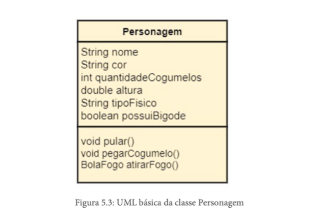

Aula 09 - UML (Unified Modeling Language)
O que é a UML?
UML é uma linguagem gráfica de modelagem de sistemas orientados a objetos. É um padrão mundialmente aceito. UML significa Unified Modeling Language (Linguagem de Modelagem Unificada). Ela provê várias notações gráficas para facilitar o processo de modelagem de sistemas OO. Vale a pena aprender um pouco mais sobre ela. Para mais informações acesse: httpp://www.uml.org/
A UML na Programaçao Orientada a Objetos
A Programação Orientada a Objetos (POO) é um paradigma de desenvolvimento de software que busca representar os elementos do mundo real dentro de um sistema computacional. Em vez de separar dados e funções, como ocorre na programação estruturada, a POO organiza o sistema em objetos, que reúnem informações (atributos) e comportamentos (métodos) em uma única estrutura. Essa abordagem torna o desenvolvimento mais intuitivo, pois se aproxima da forma como pensamos e interagimos com o mundo real.
A POO tem como objetivo principal organizar melhor os sistemas, evitando a mistura desordenada de dados e operações, o que facilita a manutenção e a compreensão do código. Isso significa que cada objeto possui responsabilidades bem definidas, interagindo com outros objetos por meio de seus métodos, o que torna o sistema mais modular e organizado
Dentro desse contexto, surge a UML (Unified Modeling Language), ou Linguagem de Modelagem Unificada. A UML não é um paradigma de programação, mas sim uma linguagem visual utilizada para representar graficamente os elementos da POO. Enquanto a POO define como o sistema deve ser estruturado, a UML permite desenhar essa estrutura, facilitando a comunicação entre desenvolvedores e o planejamento do sistema antes da implementação.
Traçando um Paralelo
Podemos fazer um paralelo simples: a POO funciona como o “projeto mental” do sistema, enquanto a UML funciona como o “desenho” desse projeto. Por exemplo, na POO definimos que um sistema possui uma classe chamada “Aluno”, com atributos como nome e matrícula, e métodos como realizar matrícula. Já na UML, representamos essa ideia por meio de um diagrama de classes, mostrando visualmente essas informações e suas relações com outras classes.
A utilização da UML é importante porque permite visualizar o sistema de forma clara e padronizada, facilitando o entendimento, a documentação e o trabalho em equipe. Em projetos maiores, essa representação gráfica ajuda a evitar erros, melhora a organização e contribui para um desenvolvimento mais eficiente.
Em resumo, a POO é responsável por estruturar o sistema de forma organizada e próxima da realidade, enquanto a UML é a ferramenta que permite representar essa estrutura de maneira visual. Juntas, elas contribuem para a criação de sistemas mais bem planejados, compreensíveis e fáceis de manter.
Embora seja inicialmente útil, como o passar do tempo, a complexidade de modelagem pode aumentar, e essa representação pode tornar-se inviável. Então, a seguinte representação pode facilitar a representação do conceito de um personagem: criar uma caixa com 3 seções, uma para o nome da classe, uma para os atributos e a última para os métodos. A figura a seguir ilustra essa nova representação.
